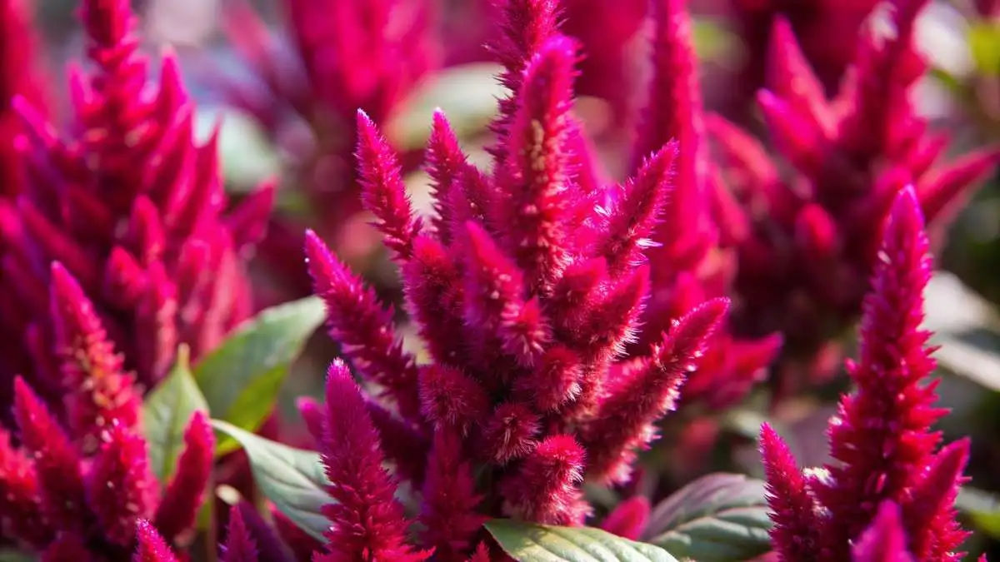

A flor de amaranto, do gênero Amaranthus, é uma planta ornamental e nutricional conhecida por suas cores vibrantes e formato de "borlas" ou cachos densos, que podem ser longos e esvoaçantes ou compactos. Além da beleza, que a associa à imortalidade devido à sua capacidade de florescer por muito tempo, o amaranto é valorizado por suas folhas e sementes, que são fontes ricas em proteínas, fibras e nutrientes essenciais.
